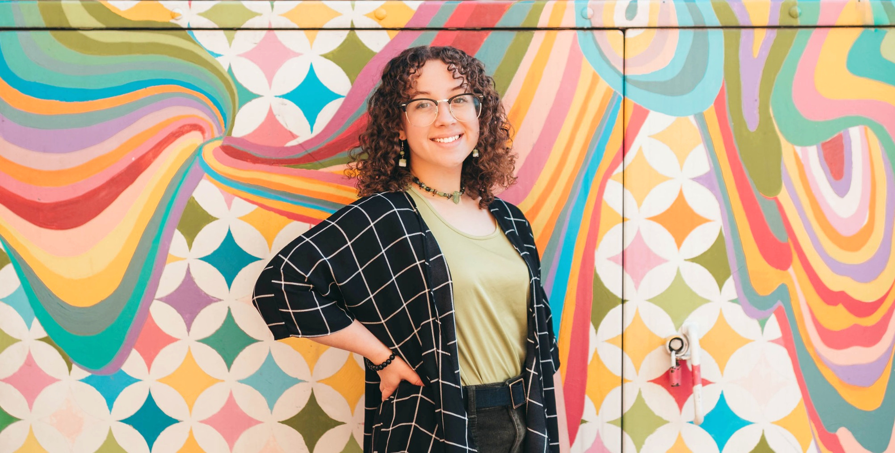
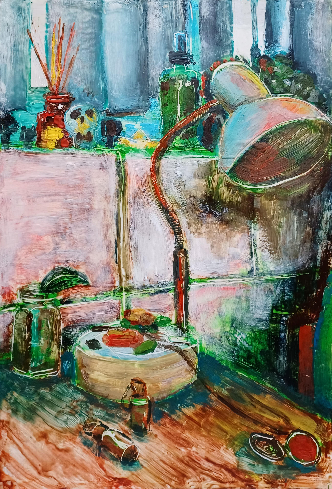
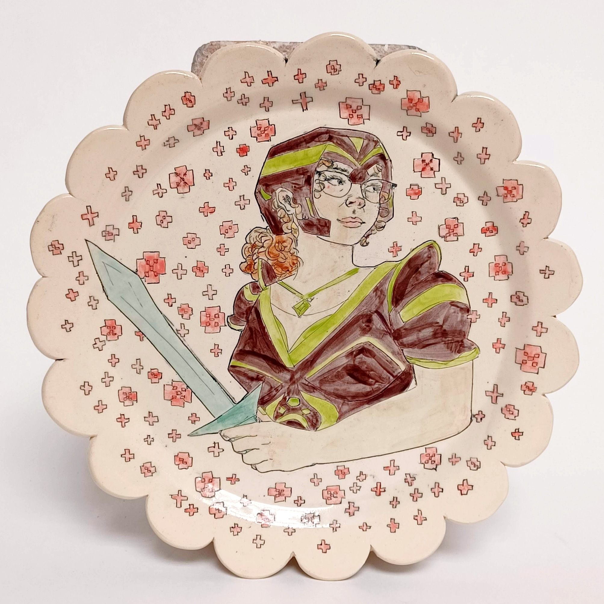

01 / PRESENCE
Inner portraits
People seen as full, complicated worlds.
Artist · image-maker · powerful psion
Portraits, strange objects, lived-in worlds, and color charged with presence. Art for people who feel more than one reality at once.


The visual frequency
Onnika’s work moves between observed life and inner weather. Faces carry histories. Rooms tilt into feeling. Ordinary objects become charged evidence.
The through-line is attention: warm, unguarded, exacting—and alive to what most people miss.
People seen as full, complicated worlds.

Rooms and objects humming with memory.

Image, vessel, archetype, and psychic armor.
Print lab / local concept shop
Build a print set by subject and display medium. Final titles, editions, sizes, prices, availability, and fulfillment stay with Onnika.
9 signals tuned · previewing fine-art paper


Onnika Vanover / artist profile
Onnika creates expressive, personal work across portraits, painted spaces, objects, commissions, and live experiences. Her power is not distance or mystery—it is radical attention.
Commission your own worldThe portal is open
Local concept preview
Contact and purchase actions do not submit